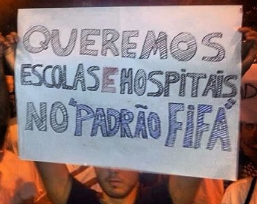
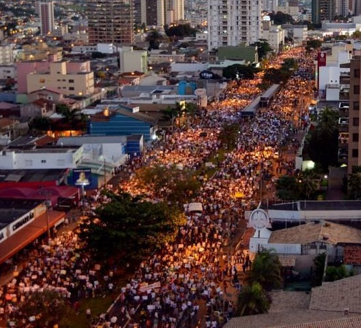

20 de junho(){
Notícias

Protesto de um manifestante
Neste dia as manifestações tomaram outro rumo e começaram a focar menos na questão da tarifa, visto que em muitas cidades sua redução já havia sido alcançada, apresentando novas reivindicações, tais como: PEC 37, PEC 33, "cura gay", gastos com a Copa de 2014, escolas e hospitais com padrão de país desenvolvido, luta contra a corrupção, direitos humanos, liberdade de expressão, etc. Neste dia houve um pico de mais de 1,4 milhão de pessoas nas ruas de 120 cidades diferentes.
Em Brasília, cerca de 30 mil pessoas participaram. O ato começou pacífico, mas quando cerca de mil manifestantes tentaram marchar para o Palácio do Planalto eles foram contidos com sprays de pimenta, bombas de gás lacrimogêneo e de efeito moral, os manifestantes responderam lançando artefatos explosivos contra os policiais.
Em Ribeirão Preto, interior do estado de São Paulo, ao menos 25 mil pessoas foram protestar. Quando o ato estava chegando ao final, um carro tentou furar o bloqueio e atropelou várias pessoas, uma delas faleceu.
Em Belém, 15 mil manifestantes foram às ruas. O ato iniciou-se no Conjunto Arquitetônico de Nazaré (CAN), no centro da capital paraense e seguiu pelas avenidas Nazaré e Presidente Vargas em direção ao Palácio Antônio Lemos. Durante a radicalização dos protestos em frente à prefeitura da cidade, alguns trabalhadores se protegeram dentro do monumento de um bonde restaurado para visitação turística. Houve a explosão de bombas de gás lacrimogêneo dentro deste bonde, umas das pessoas que estava ali escondida e inalou o gás se sentiu mal e teve uma parada cardíaca, vindo a falecer.

Manifestação em Uberlândia
Em Uberlândia - MG, houveram cerca de 20 mil participantes. A concentração ocorreu na Praça Clarimundo Carneiro, seguindo pela Avenida Afonso Pena, Avenida João Naves de Ávila e terminando em frente à prefeitura da cidade. Durante a mobilização foram registrados atos isolados de vandalismo e não houve confronto com a polícia.
Referências:
Wikipédia
Correio Braziliense
Ricardo Gama
Correio de Uberlândia
}